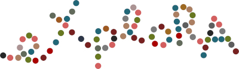
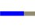
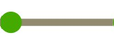

|  |
|
Perception of materials, objects and spaces through active EXPLORAtion An MSCA doctoral network funded by the HORIZON 2020 framework - project lifetime 2026-2030 |
|
|
| Home | Participants | PhD Candidates | Projects | Publications | Explora kits |
|
Apply for a doctoral position now! |
|
Overview Events Timeline |
|
EXPLORA aims to uncover the mutual interactions between perceptual impacts and active exploration systematically, quantitatively, and empirically.
Exploratory behavior is at the core of human essence. Being confronted with novel terrain, materials, tools, or artistic creations, humans instinctively explore the unknown in order to acquire information about it, to make sense of it, to act on it, and to appreciate what is in front of them. This involves dynamic engagement like walking, observing, handling objects, and manipulating them to witness changes in sight, touch, or sound.
The mutual relationships between perceptual experiences and the dynamic structures of the multi-sensorial information generated by active exploration are still not well understood. This is a significant scientific challenge in itself and for comprehending the human mind's workings in natural settings.
Through a cross-sectoral, multi-disciplinary and sustainable research and training programme, we aim to creating impact through transfer between science, engineering, design, arts and industry and by connecting multiple levels of STEAM education from middle schools to doctoral education. Understanding active exploration has the potential to impact the development of multi-sensory interactive technologies and the innovative design of immersive systems, as well as the modeling of intelligent adaptive behavior, thereby affecting nearly every facet of our life, including healthcare, education, mobility, AI, robotics and culture.
|
Events
|
|
Timeline
Mouse over the timeline for more information. Links to upcoming meetings will become active soon. |
|
... |
Start 01.02.2026 |
Network Meeting 1 03/2026 |
Outreach skills 1 10/2026 |
Network Meeting 2 04/2027 |
Network Meeting 3 10/2027 |
Network Meeting 4 04/2028 |
Network Meeting 5 10/2028 |
Network Meeting 6 04/2029 |
End 31.01.2030 |
|  |  |
|
Go back to top
|
|
-7-2025- |